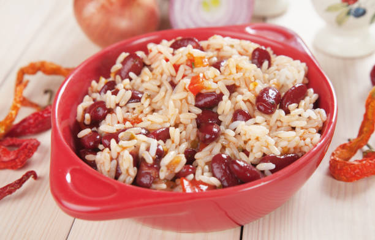

Home
Rice & Beans

A classic and hearty dish loved around the world. Rice and beans are nutritious, filling, and easy to prepare.
Ingredients
- 1 cup rice
- 1 cup beans
- 1 onion
- cloves garlic
- 2 tbsps oil
- Salt and pepper to taste
Steps
- Heat oil in a pan and sauté onion and garlic.
- Add rice and stir for 2 minutes.
- Add 2 cups of water and cook until rice is almost tender.
- Mix in beans, season with salt and pepper.
- Simmer until rice is fully cooked.